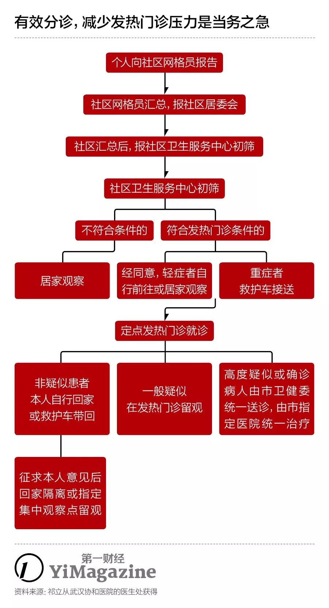
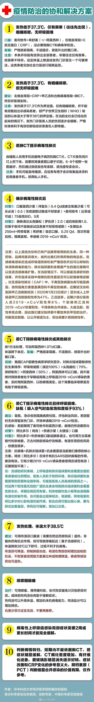

小城肺炎防疫父女战：戴口罩小题大做，怕被认出来“丢人”
原文链接 备份链接 春节期间，街边摆摊卖走亲戚用礼品盒的越来越少，仅有的几个摊主都戴着口罩。一位摊主介绍：“今年来买东西的少了，路上的人也少了。”说完话，他下意识紧了紧鼻头的口罩。 全文3623字，阅读约需7分钟 距离武汉900公里的河 …

祁立说现在最大的困难，是发热门诊的就诊人数过多。而一线医务工作者最需要的，是能让患者根据规范的指南分级诊疗，减轻发热门诊和隔离病房不必要的压力。整个采访，他没有表达恐慌和焦虑，只希望传递客观、真实、有价值的信息。
记者 | 肖文杰
编辑 | 赵 嘉
制图 | 程 星
如果说疫情是一场战争（它也的确就是），那么湖北就是核心战场。而在疫源地武汉接诊发热病人的医生，便是最前线的士兵。
祁立就是其中之一。
他是武汉一家大型综合医院的医生。1月19日，他接到院方通知，被紧急征调到急救中心，担任院前急救医生。所谓院前，简单而言，就是120救护车上的医生。而他的同事，也陆续接受征调，进入发热门诊或隔离病房。
平日，需要120急救车的病人，包括内、外科疾病、外伤等，但他实际接诊的，几乎都是发热病人。
以下内容，是根据对祁立的采访整理。祁立愿意接受采访，是因为他知道所有人正在经历信息轰炸，他希望作为一名一线医生，传递他所了解的，客观、真实，以及真正重要的信息。

题图来源：第一财经
为了保护祁立和他所在的医院，我们也采用了化名和信息模糊处理。他希望尽可能淡化个人情感，这也是本文采取第三人称，而不是第一人称的一个原因。
整个采访，他没有表达恐慌和焦虑。
01
疫情爆发前，医生能提前知道情况不对吗？
和大多数人一样，祁立一开始也对疫情估计不足。12月底社会上有了消息，那时医院也没有特殊的防护措施。因为当时病例不是很多。而且这个病起病时，症状和普通的呼吸道感染区别不大。
1月16日，祁立和同事感受到疫情不那么简单。医院的院感开始增加防护措施。院感是医院的重要部门，作用就是防止和检测医院内的交叉感染。这时候，虽然是外科医生，不直接接触发热或肺炎的病人，但祁立和他的同事也开始随时戴口罩了，当然N95很缺。那时候医生之间已经准备好“上战场”。3天后，紧急征调通知就下来了。
02
如何看待封城？
祁立支持封城和交通管制。从医学和流行病学的角度，减少人员流动，控制每个传染源，让每个病人获得合适的救治，是应对此类疫情最好的办法。他个人觉得，如果更早封城，会更好。
当然，他知道封城之后会出现许多应激的困难。作为一线医生，他也遇到了不少。
03
抗击疫情过程中，一线医生的真实工作状态究竟如何？
祁立担任的是院前急救医生，一旦接到电话，他们必须4分钟之内出车，前往拨打120的患者所在地，或者是需要转运病人的医院。上了车之后，他就需要和患者及家属电话联系，了解病情，提供建议。到了现场，需要完成第一时间的急救治疗，然后把患者运到医院，与那里的医生完成交接。
在开设发热门诊的定点医院，医护人员主要集中在两个区域：发热门诊和隔离病房。发热门诊医生的主要工作是完善检查，给出初步诊断，再根据统一的治疗指南（全称是《新型冠状病毒感染的肺炎诊疗方案（试行第四版）》，下文简称“指南”）推荐治疗手段。之后，根据指南，疑似和确诊病人被收入隔离病房，由那里的医生治疗。
祁立的工作节奏，是做24小时，休息48小时。发热门诊和隔离病房则是一天三班倒，工作8小时，休息16小时。但因为就诊人数远超过医院的“产能”，所有人都在超负荷运转。医生和护士经常需要换岗、补充，实际工作时间可能更长。
1月28日的情况是，去他所在的医院看发热门诊，病人需要在户外排队3到4个小时。前两天则更长，可能需要5到8个小时。这种人满为患的情况从封城之前就开始了。
《新型冠状病毒感染的肺炎诊疗方案（试行第四版）》摘要：
传播途径：经呼吸道飞沫传播是主要的传播途径，亦可通过接触传播。
易感人群：人群普遍易感。老年人及有基础疾病者感染后病情较重，儿童及婴儿也有发病。
潜伏期：基于目前的流行病学调查，潜伏期一般为3至7天，最长不超过14天。
临床分型：
1）普通型：具有发热、呼吸道等症状，影像学可见肺炎表现；
2）重型，符合下列任何一条：
呼吸窘迫，RR≥30 次/分；
静息状态下，指氧饱和度≤93%；
动脉血氧分压（PaO2）/吸氧浓度（FiO2）≤300mmHg
（1mmHg=0.133kPa）。
3）危重型，符合以下情况之一者：
出现呼吸衰竭，且需要机械通气；
出现休克；
合并其他器官功能衰竭需ICU 监护治疗。
04
担任院前医生以来，最棘手的事情是什么？
现在，祁立一次值班要接单15单左右，过去春节假期大约是每天3到5单。出车后，他没法估算这一单所需时间。因为有许多不确定因素，这不是指疾病本身。新型冠状病毒本身的治疗，其实医生们已经有底了。因为官方的指南已经出台，而且不断更新，他们只要根据指南来做。
让祁立感到棘手的有两类情况。
一种是他出诊后，发现病人症状较轻，检查、治疗、开药，都可以在社区医院完成，没必要去医院发热门诊。但病人可能不听。“我们只能反复说服，跟他们说发热门诊交叉感染的风险，还有就诊条件的恶劣。”祁立说。
现在已经有些医院制作PPT，告诉医生如何与轻症患者沟通。当然，祁立也知道，如果想要达到理想状态下的分级诊疗，社区医院的人力和物资也得补上。
另一种是病情严重的病人，没法送进抢救室。祁立遇到过一次出诊，病人已经失去行动能力，他的诊断是需要迅速进入抢救室抢救。但等送到定点医院，抢救室没有位子了。
“病人家属和医生在沟通，当然也会有争执摩擦，而我们能做的是两件事，一方面和其他医院沟通，看看有没有抢救室的床位，另一方面也和医院沟通，想想有什么办法。院前医生的职责，是必须确保病人交接完毕。”祁立说。
最后，由于病人情况确实紧急，隔离病房里的医生出来临时抢救这位病人。当然，这不符合规范，但情况特殊。这次出诊和转运，花了近3个小时。
05
目前的当务之急是什么？
对于一线医生来说，目前一切的困难和矛盾，都可以归结为医院的治疗能力，远远供不应求。现在医院的发热门诊和隔离病房里塞满了病人。而其中，有不少是不必到发热门诊就医的轻症患者，也有很多没有感染新型冠状病毒的病人。
如何说服轻症的患者根据指南，分流到社区医院，或是居家治疗，避免过多人群涌入发热门诊，是包括祁立在内的一线医生最大的挑战。他们的想法很简单，把有限的医疗资源，最高效率地应用起来，才能更快遏制疫情，救治病人，防止扩散。

06
一线医生最需要什么？
自从国家卫健委每天召开新闻发布会，记者总会追问真实的确诊和疑似病例到底有多少。一线医生对这个数字反倒不关心了。不仅因为高负荷的工作中没空想这些，更因为目前的确诊数字无法客观反映现有疫情控制措施的效果，对他们的工作也没有指导性意义。
现在确诊数字快速上升背后，是试剂盒越发充足，以及处于潜伏期的病人陆续发病。
在实际工作过程中，他们更关心的是客观条件和资源，这些才能支撑他们保持这种超负荷工作状态。
以下三件事最要紧。
医疗物资。据祁立了解，不同医院的医疗物资储备都不相同。外省市医疗队，或是军方医疗队接管的医院，普遍得到了补给。更多的医院，在封城之前，已经开始各自想办法。
有的医生托人从境外代购了几千套防护服，有志愿者把口罩送到医院，也有公司送来了易保存的快捷食品，这些的确是实实在在的帮助。
在紧急时刻，医务工作者也会自助。物资被优先供应给要害位置，其他医生如果没有防护服，就用外科手术服顶一顶。有的医生用游泳镜替代护目镜，也是有用的，可以防止身体的粘膜和病毒接触。
祁立还看到一个基层医院的土办法，用透明的文件夹，剪开后用输液管代替绳子，再用洗手液消毒，系成一个简易的防护面罩，也能派上用场。
“物资确实缺，尤其防护服等，我们也知道医院和政府都在想办法，还有很多人在帮忙。作为医生能做的只有坚持工作，同时相信物资可以补上，相信每个人都尽到自己的职责。”祁立说。
交通保障。祁立的微信里，有个群名叫“武汉医护人员接送群101号”.在封城之后，武汉很快又发布了市区内的交通管制。如何去医院上班确实成为医护人员最急迫的难题。祁立了解到的解决办法有：
1、有车的医护人员，就向医院申请通行证，尽可能带一些同事；
2、没车的同事，除了搭车，还会向别人借车，然后申请通行证；有医生花了一天，向多年好友借了车，并嘱咐朋友把车上的坐垫、玩偶、配饰都拿掉；
3、实在不行，就通过市民互助，医生不愿意这么做，因为他们想尽可能控制可能的传染范围。
4、政府也在提供车队。而医生们希望的，是尽快明确现在有些模糊的交通管制措施，落实每个医护人员的通勤。
住宿保障。医生都在自觉避免与家人住在一起。独居的医生还好办，与人同居的医生，就得在外面找住处，医院附近的酒店是一大选择。
祁立知道，现在有很多酒店提供免费房间给医务工作者，他很感激，但也指出其中的安全隐患：酒店房间内的摆设和家具比病房多得多，消毒很难做到零死角。有的医院较早在院区临时搭建了宿舍，但更多的医院在春节期间已经找不到工人了，疫情升级之后，就更不可能了。
祁立听说政府正在组织集中的住宿点，他希望能尽快落实。
07
一线医生要承受身体和心理等方面多重压力，怎么缓解？
身体是第一位的。祁立回到家，把所有外出穿的衣服清洗消毒，洗完澡，自身消毒。这些步骤完成后，抓紧睡觉。
所有医生都是趁着下班时间尽量补充睡眠，补充营养。
在一线医生心里，病例快速增加，既增加了压力，也减轻了压力。增加的是工作压力，病人太多，他们的身心都必须超负荷运转。
减轻的压力在于，疫情刚开始时，重症比例高，而且有医护人员被感染，都是人，说不怕是假的。但随着病例增加，他们知道重症病人往往是有其他基础疾病，对大多数人来说，症状不那么严重，也可以治愈。
这对他们的心理是个托底：就算中招了，也不会到最糟的那一步。
祁立说自己属于“没心没肺”类型，回到家休息好，和朋友聊聊天，看看剧，打打联机游戏。他知道有的医生在崩溃边缘，那么多患者，总会碰到有意不配合的。同事之间能做的，也就是在微信群里发些好消息，打气的话，或是搞笑视频，让气氛活跃一些。这是他们目前的心理支持手段。
祁立每天也只是通个电话，跟长辈说下工作情况，报一下自己的体征，甚至不会刻意说一句“我很平安”。
08
最应该传递给公众的信息是什么？
祁立一直强调，希望尽可能让公众正确认识这个疾病和这次疫情。在家休息时，他也会尽可能在微信上科普。他愿意接受采访的重要原因，也是希望能让更多普通人正确应对，这是对医生最大的帮助。
如果轻症病人都能根据指南，通过合适的方法就诊，在社区医院接受合适的治疗，在家隔离，不仅自己能降低交叉感染的风险、有效控制病情，还能缓解发热门诊和隔离病房的压力。两个在建的“战地医院”，当然能缓解情况，但整个社会的有序应对和配合，是最好的补给。
祁立提供了一些关于疫情的诊疗和公开信息，他相信认知可以减少恐慌。

09
接下来会怎么样？
祁立说，一线的医生没有办法给出明确的预测，没有谁能给出这样的预测，现在，他们还处于激战中。
最近他和其他定点医院的医生交流，不少人觉得，如果现在公布的疫情防控措施，都实打实地落地，加上外界支援、物资补给，也许一个月后，一线的情况就能缓和。而武汉的疫情要完全控制住，可能需要两到三个月。
在这期间，确诊人数还会有一段快速上升的过程，但这是一个必经的过程。这不代表现行的措施没有效果，客观上也能帮助医生们对患者群体有更好的把握。现在要做的就是坚持下去，做好执行。
最后，让我们看看钟南山在接受新华社采访时对疫情的分析。| 视频来源：新华社
（应采访对象要求，祁立为化名）
本文版权归第一财经所有，
未经许可不得转载或翻译。

原文链接 备份链接 春节期间，街边摆摊卖走亲戚用礼品盒的越来越少，仅有的几个摊主都戴着口罩。一位摊主介绍：“今年来买东西的少了，路上的人也少了。”说完话，他下意识紧了紧鼻头的口罩。 全文3623字，阅读约需7分钟 距离武汉900公里的河 …
原文链接 备份链接 记者/魏晓涵 实习记者/陈威敬 编辑/刘汨 宋建华 孝感市第一人民医院的医生拆下文件袋作为保护面罩 年初三下午5点，王隆和同事在湖北襄阳去往河南新乡的路上，已经连续开了7个小时车。目的地有一家防护服的生产厂，称可以为他 …
原文链接 备份链接 ********** *****春节期间，街边摆摊卖走亲戚用礼品盒的越来越少，仅有的几个摊主都戴着口罩。**********一位摊主介绍：**********“今年来买东西的少了，路上的人也少了。**********” …
原文链接 备份链接 1月28日下午三时，中国青年报·中国青年网记者实地探访武汉市第五医院输液室。 本文约4534字 预计阅读时间12分钟 中青报·中青网记者 王嘉兴 这是一位坚守在抗击新型肺炎一线医生的自述。她经历了疫情初期所在医院的 …
原文链接 备份链接 武汉各大医院发热门诊的紧张态势已有一周，七家定点医院启动才两天已被压到极限。 武汉不缺顶级医院，不缺顶级专家，不缺顶级医疗能力，缺的是公共卫生防控能力、行政效率和疫情处理流程。 在患者和大医疗机构之间，未见到基层 …